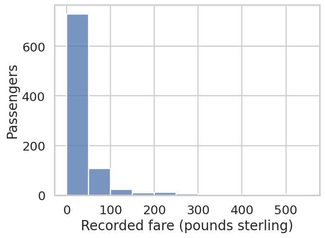
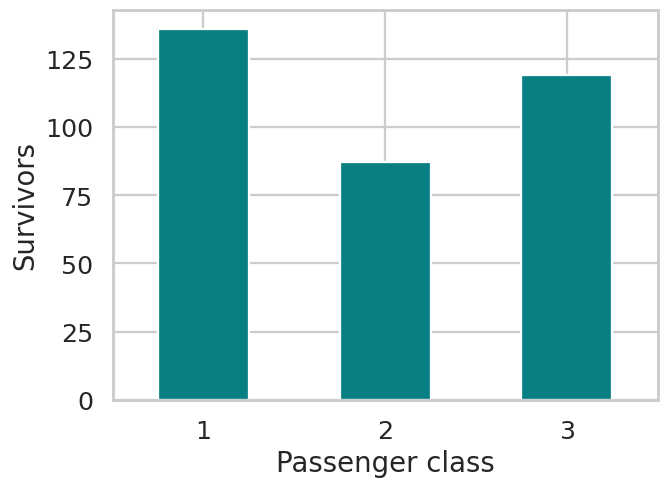
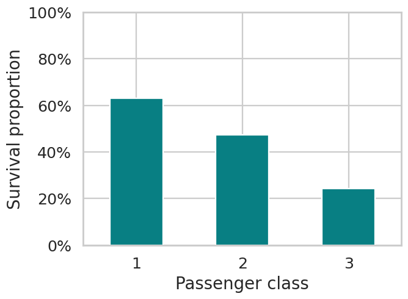
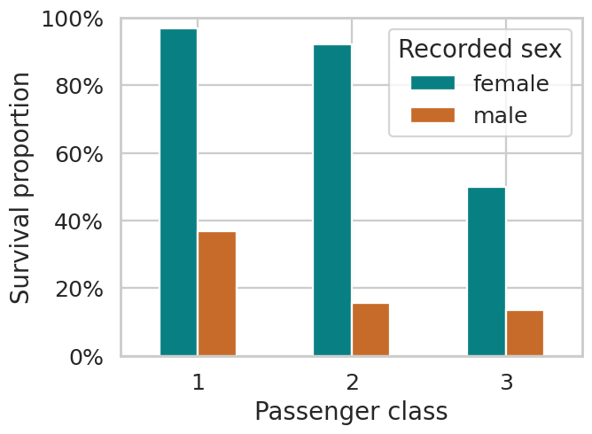

from pathlib import Pathimport pandas as pdimport matplotlib.pyplot as pltimport matplotlib.ticker as mtickimport seaborn as sns# Open the project folder in Positron and select its .venv interpreter.# Support kernels starting in the project root or in notebooks/.ROOT = Path.cwd()if not (ROOT / "data/titanic.csv").is_file(): ROOT = ROOT.parentif not (ROOT / "data/titanic.csv").is_file(): raise FileNotFoundError("Open the project folder, then run this notebook again.")titanic = pd.read_csv(ROOT / "data/titanic.csv")sns.set_theme(style="whitegrid", context="talk")Titanic EDA: Completed reference
Question: How does survival vary by passenger class? What should we investigate after the first plot?
All code and outputs are supplied. Use this as your teaching reference or recovery copy.
The paired notebooks use the same sections. Open the scaffold for class and keep the completed version in another tab.
Data: the bundled seaborn Titanic subset. See the data dictionary and source notes.
SetupRun this cell before class. The dataset loads from the project folder without a download.
The recordsWhat does one row represent? Which columns can help us compare survival across passenger classes?
titanic.head()| row_id | survived | pclass | sex | age | fare | sibsp | parch | embarked | |
|---|---|---|---|---|---|---|---|---|---|
| 0 | 0 | 0 | 3 | male | 22.0 | 7.2500 | 1 | 0 | S |
| 1 | 1 | 1 | 1 | female | 38.0 | 71.2833 | 1 | 0 | C |
| 2 | 2 | 1 | 3 | female | 26.0 | 7.9250 | 0 | 0 | S |
| 3 | 3 | 1 | 1 | female | 35.0 | 53.1000 | 1 | 0 | S |
| 4 | 4 | 0 | 3 | male | 35.0 | 8.0500 | 0 | 0 | S |
Interpretation: One row represents one passenger in this 891-record subset. This is not the complete Titanic manifest.
Available informationAre the fields we need complete? Age and embarkation may matter for later questions.
print(f"Passenger records: {len(titanic):,}")titanic.isna().sum()Passenger records: 891row_id 0
survived 0
pclass 0
sex 0
age 177
fare 0
sibsp 0
parch 0
embarked 2
dtype: int64Interpretation: survived, pclass, and sex are complete. age has 177 missing values and embarked has 2. All 891 records contribute to the comparisons below.
Optional warmup: the fare distributionWhat do you notice? What would you ask next? This matches the opening slide and can be skipped during the seven-minute demonstration.
sns.histplot(data=titanic, x="fare", bins=range(0, 551, 50))plt.xlabel("Recorded fare (pounds sterling)")plt.ylabel("Passengers")plt.tight_layout()plt.show()
Interpretation: Most recorded fares are in the lower bins, with a long right tail. A comparison by class would be a reasonable next question.
First question: how many survivors in each class?Begin with a count. What does this view leave unresolved if we want to compare survival proportions?
survivors = titanic.loc[titanic["survived"].eq(1)]counts = survivors.groupby("pclass").size()display(counts)ax = counts.plot.bar(rot=0, color="#087F83")ax.set(xlabel="Passenger class", ylabel="Survivors")plt.tight_layout()plt.show()pclass
1 136
2 87
3 119
dtype: int64
Interpretation: The survivor counts are 136, 87, and 119. The class sizes differ, so the counts alone do not answer the proportion question.
Follow-up: what proportion survived?Use all passengers in each class as the denominator. For complete 0/1 data, the mean equals the proportion of ones.
class_summary = titanic.groupby("pclass")["survived"].agg( survivors="sum", passengers="size", survival_rate="mean")display(class_summary.round(3))ax = class_summary["survival_rate"].plot.bar(rot=0, color="#087F83")ax.set(xlabel="Passenger class", ylabel="Survival proportion", ylim=(0, 1))ax.yaxis.set_major_formatter(mtick.PercentFormatter(1))plt.tight_layout()plt.show()| survivors | passengers | survival_rate | |
|---|---|---|---|
| pclass | |||
| 1 | 136 | 216 | 0.630 |
| 2 | 87 | 184 | 0.473 |
| 3 | 119 | 491 | 0.242 |

Interpretation: The proportions are 63.0% (136/216), 47.3% (87/184), and 24.2% (119/491). The next question asks whether that aggregate pattern looks similar within sex categories.
Another question: does the pattern look similar within sex categories?Keep the class comparison and add recorded sex through color. Predict what might change before running the cell.
group_summary = titanic.groupby(["pclass", "sex"])["survived"].agg( survivors="sum", passengers="size", survival_rate="mean")display(group_summary.round(3))rates = group_summary["survival_rate"].unstack("sex")ax = rates.plot.bar(rot=0, color=["#087F83", "#C76B2A"])ax.set(xlabel="Passenger class", ylabel="Survival proportion", ylim=(0, 1))ax.yaxis.set_major_formatter(mtick.PercentFormatter(1))ax.legend(title="Recorded sex")plt.tight_layout()plt.show()| survivors | passengers | survival_rate | ||
|---|---|---|---|---|
| pclass | sex | |||
| 1 | female | 91 | 94 | 0.968 |
| male | 45 | 122 | 0.369 | |
| 2 | female | 70 | 76 | 0.921 |
| male | 17 | 108 | 0.157 | |
| 3 | female | 72 | 144 | 0.500 |
| male | 47 | 347 | 0.135 |

Interpretation: First-class survival proportions exceed third-class proportions within both recorded categories. Female survival proportions exceed male proportions within each class. These are descriptive associations in the passenger subset, not isolated causal effects.